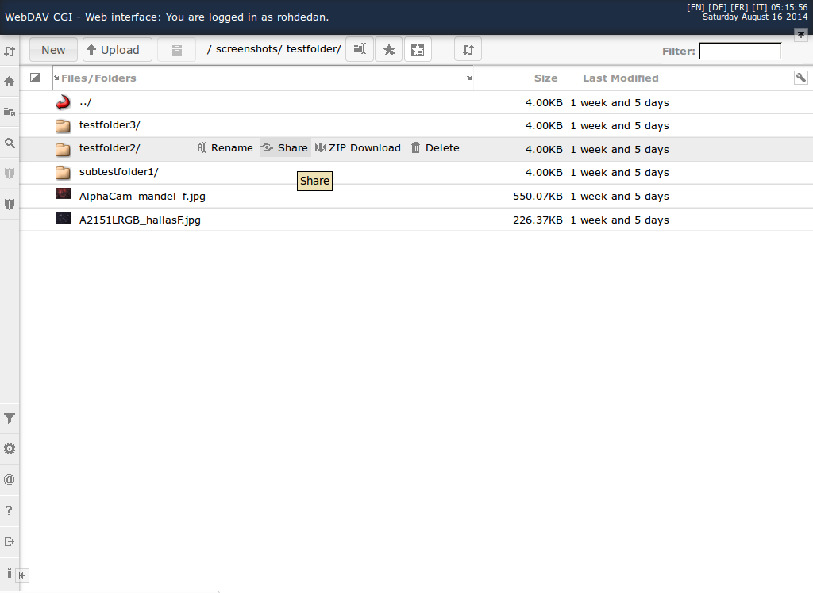
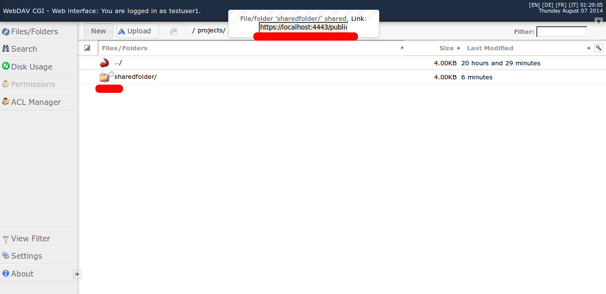
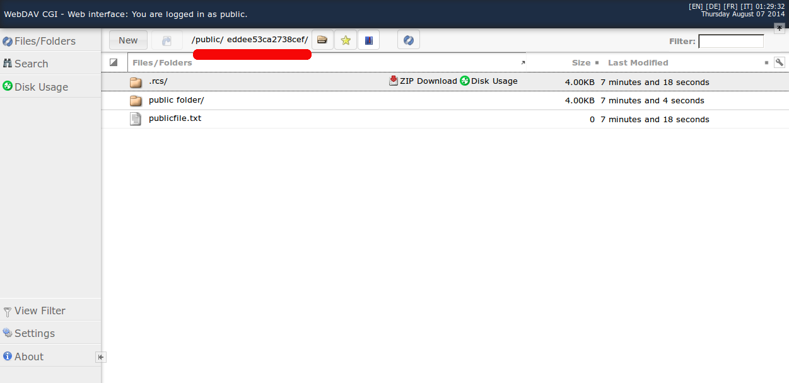

PublicUri Extension
... allows users to share files and folders. A public link is salted with a hash value, which makes it difficult to guess it.
Instructions:
|  |  |  |
| Share button | Shared folder | Public view |
{kind=link}
{kind=link}
{kind=link}
Prepare filesystem
The main problem: You need a user with read access to all files and additional execute (lookup) rights to all folders.
There are different solutions to do that and it depends on your filesystem. To get an idea of how you can do this:
- POXIX/AFS ACLs:
- activate ACLs if you don't have it yet. EXT3/4 needs a mount flag 'acl'. Change your /etc/fstab entry and remount your filesystem:
mount -o acl,remount /myfilesystem - create a user 'public' and a group 'public'
- add a default ACL to all files/folders to permit read access to files/folders:
# POSIX: setfacl -m -R group:public:r /mydatadir find /mydatadir -type d -exec setfacl -d -m group:public:rx {} \; find /mydatadir -type d -exec setfacl -m group:public:rx {} \; # AFS: find /mydatadir -type d -exec fs setacl -dir {} -acl public:public lr \;
- activate ACLs if you don't have it yet. EXT3/4 needs a mount flag 'acl'. Change your /etc/fstab entry and remount your filesystem:
- POSIX permissions:
- create a user 'public' and a group 'public' with user 'public' in this group
- change group for all files and folders:
chgrp -R public /mydatadir - add read access to all files:
find /mydatadir -type f -exec chmod g+r {} \; - add read, execute, and setuid flag for the group to all folders:
find /mydatadir -type d -exec chmod g+rxs {} \; - add
$UMASK=0027;to your webdav.conf
Configure WebDAV CGI
- Enable 'PublicUri' extension: add 'PublicUri' to your
@EXTENSIONSlist:@EXTENSIONS{'PublicUri', 'Highlighter', 'Download', 'Zip', 'Search', 'Diff', 'DiskUsage' ); - and enable event listener:
@EVENTLISTENER = ('WebInterface::Extension::PublicUri::EventListener'); - Make a copy of your webdav.conf:
cp /etc/webdav.conf /etc/webdav-public.conf - Append some parameters to your copy:
cat - >>/etc/webdav-public.conf <<EOF $BACKEND_CONFIG{RO}{backend}=$BACKEND; $BACKEND='RO'; $DOCUMENT_ROOT='/_does_not_exists/'; $VIRTUAL_BASE='/public/?'; @EXTENSIONS=('PublicUri','Download','Zip','Search','Diff','DiskUsage'); @EVENTLISTENER = ('WebInterface::Extension::PublicUri::EventListener'); $EXTENSION_CONFIG{PublicUri}={ uribase=>"https://$ENV{HTTP_HOST}/public/", virtualbase=>$VIRTUAL_BASE }; # PublicUri extension parameters: # virtualbase - virtual base URI for the public link (default: /public/) # uribase - base URI for the public link (default: https://$ENV{HTTP_HOST}/public/) # propname - property name for the share digest (default: public_prop) # seed - property name for digest seed (default: seed) # namespace - XML namespace for propname and seed (default: {http://webdavcgi.sf.net/extension/PublicUri/}) # prefix - a prefix for URI digest (default: empty string) # allowedpostactions - allowed actions regex, default: ^(zipdwnload|diskusage|search|diff)$ EOF
Configure webserver
The following must be in the Apache configuration above your WebDAV CGI rewrite rules:
ScriptAlias /_pfs /etc/webdavcgi/cgi-bin/webdavwrapper
<Location /_pfs>
# Apache >=2.4:
Require All Granted
# Apache <2.4:
# Order Allow,Deny
# Allow From All
</Location>
### modify '/public' URL and WEBDAV_USER according to your needs:
RewriteRule ^/public /_pfs [E=WEBDAVCONF:/etc/webdav-public.conf,E=REMOTE_USER:public,E=PERLLIB:/etc/webdavcgi/lib/perl,L,PT]
## AFS and SMB users need a AUTHHEADER parameter with a base64 encoded username:password string (cmd: base64 <<<'username:password') for kinit:
## E=AUTHHEADER:dXNlcm5hbWU6cGFzc3dvcmQK
# ... WebDAV CGI Rewrite Rules
© ZE CMS, Humboldt-Universität zu Berlin | Written 2011-2014 by Daniel Rohde